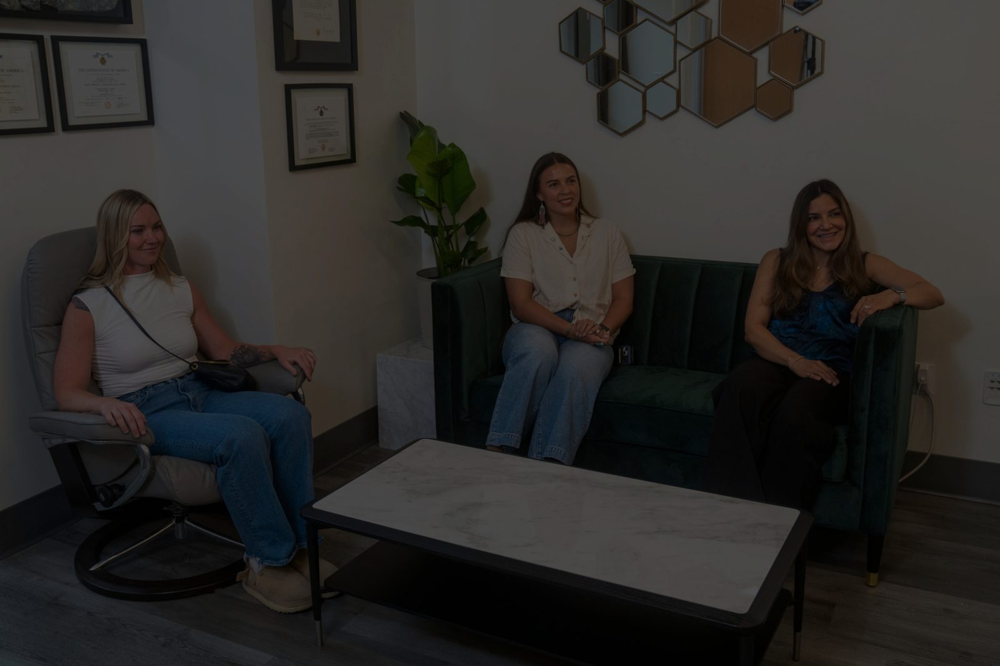
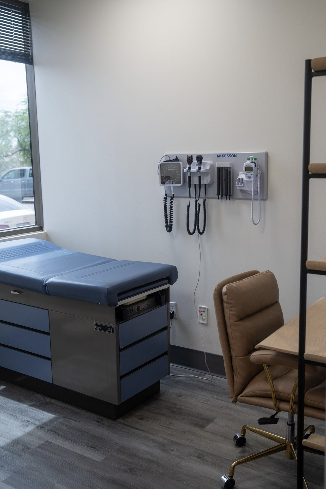
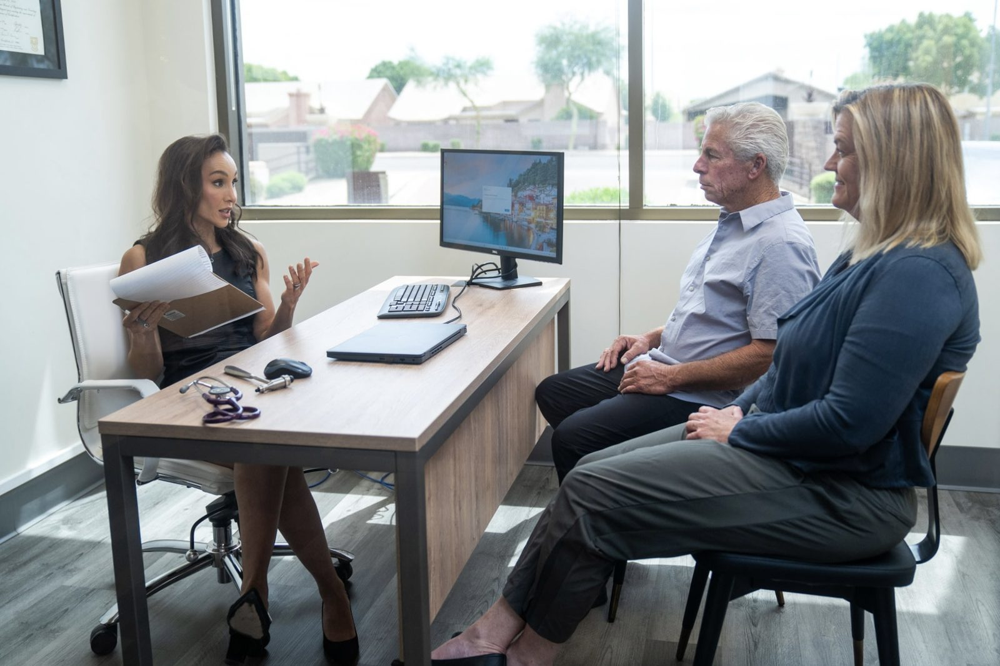
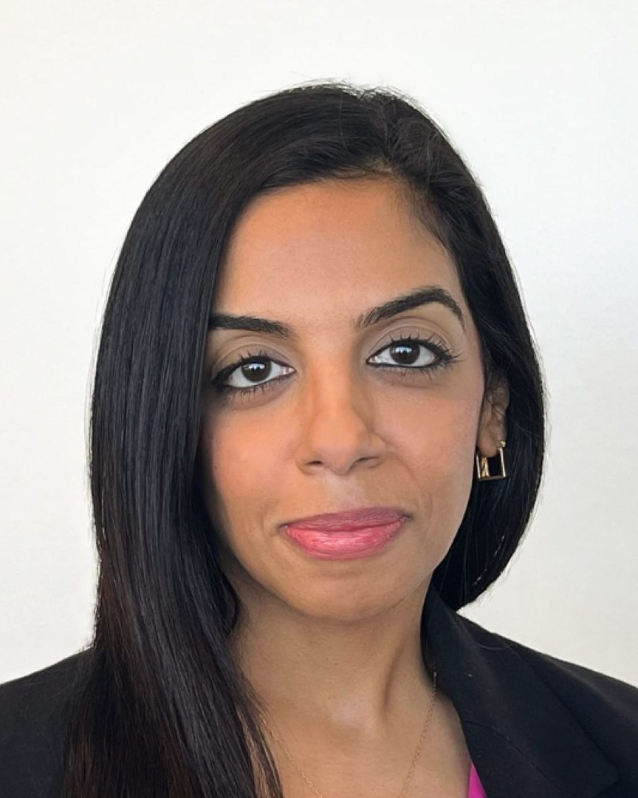
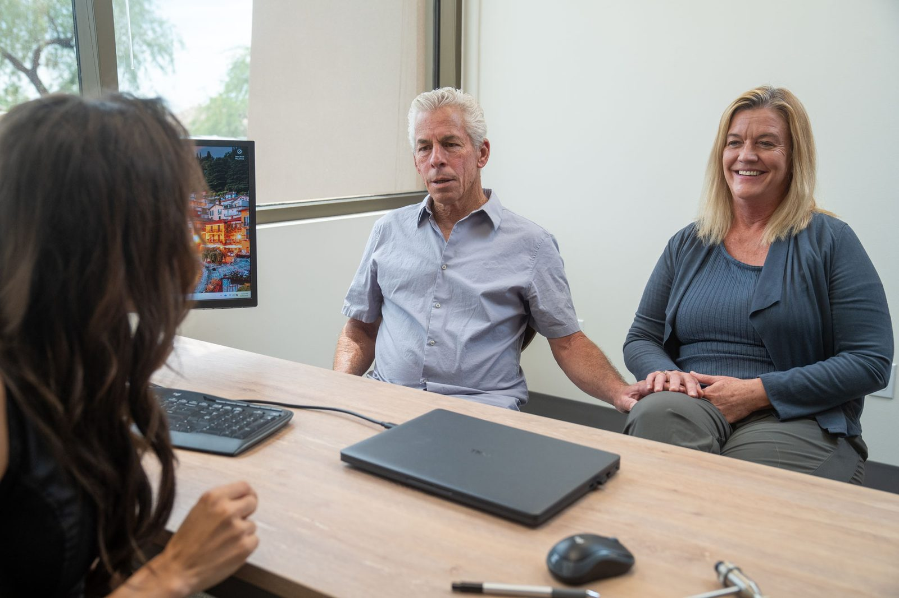

General Neurology
Evaluation, diagnosis and long-term management of conditions affecting the brain, spinal cord, nerves and muscles in adults.

Plano, Texas · Texas Neurology Consultants
Alla Al-Habib, M.D. is a triple board-certified neurologist caring for patients across North Dallas — with a special interest in stroke and headache medicine.
Welcome
Texas Neurology Consultants is a physician-owned, independent neurology practice that has served the DFW area since 2003.
We diagnose and treat disorders of the brain, spinal cord, nerves and muscles — from migraine and epilepsy to stroke, neuropathy and memory concerns. Dr. Alla Al-Habib sees patients at our Plano office on the Texas Health Presbyterian Plano campus, where EEG, EMG/nerve conduction studies, sleep studies and cognitive testing are all performed in house.

What We Provide
Consultation, diagnosis, testing and ongoing treatment — without sending you across town for every step.
Evaluation, diagnosis and long-term management of conditions affecting the brain, spinal cord, nerves and muscles in adults.
Dr. Al-Habib completed a vascular and stroke fellowship at Washington University in St. Louis and is board certified in stroke neurology.
UCNS-certified headache care, including preventive strategies, acute treatment and botulinum toxin (BOTOX®) injection for chronic migraine.
EEG and ambulatory EEG, EMG and nerve conduction studies, sleep studies and NeuroTrax cognitive testing, performed and read here.
Conditions We Treat
Dr. Al-Habib provides a full range of adult neurology evaluation and treatment, including for:
Before You Book
Your visit is billed to your insurance in the usual way. Because coverage varies plan by plan, please call us at (972) 403-3100 to confirm that we are in network with your specific plan before your first appointment.
Some plans require a referral from your primary care physician before a neurology visit. Check with your plan — our front office can help you work out what yours needs.
We do not accept Medicaid, or Medicare and Medicaid replacement plans. We also do not treat patients involved in motor vehicle accidents, workplace incidents or active litigation, unless the visit is unrelated to that injury or claim.


Meet
Triple Board Certified Neurologist
Dr. Al-Habib cares for patients in North Dallas from our office on the Texas Health Plano campus.
She earned her medical degree at Jordan University of Science and Technology, then completed a postdoctoral research fellowship and her neurology residency at Baylor College of Medicine in Houston, followed by a vascular and stroke fellowship at Washington University in St. Louis. She has since worked as a neurohospitalist across the Texas Health Resources and Baylor Scott & White systems, and as a teleneurologist with Mercy Virtual Care Center. She is listed as a Texas Medical Board expert panelist.
Why Choose Us
We answer to our patients, not to a hospital system or a private equity owner. Clinical decisions are made in the exam room.
Fellowship training in vascular and stroke neurology and UCNS certification in headache medicine, on top of general neurology board certification.
EEG, ambulatory EEG, EMG/NCS, sleep studies and NeuroTrax cognitive testing are done in our office, so answers come back faster.
More than two decades caring for patients in Plano and the wider DFW area, with over 40 years of combined physician experience.
You see your neurologist — not a different provider each visit — so your history and your treatment plan stay in one pair of hands.
Neurological symptoms are frightening. We take the time to explain what we find, what it means, and what happens next.
Credentials
Dr. Al-Habib’s qualifications, at a glance.
Jordan University of Science and Technology — Irbid, Jordan.
Neurology, Baylor College of Medicine — Houston, Texas.
Vascular and stroke neurology, Washington University in St. Louis — Missouri.
American Board of Psychiatry and Neurology.
Vascular neurology, American Board of Psychiatry and Neurology.
United Council for Neurologic Subspecialties — headache medicine.
From the Blog
Plain-language writing from Dr. Al-Habib on stroke, headache, memory and the conditions we see most often in clinic.
Most of my patients over 60 can’t skip. Not won’t — can’t. That single test tells me more about brain health than almost any other quick screen I can do in an exam room.
Read MoreResearch suggests that between 45 and 70% of dementia cases could be prevented at the population level through modification of eight key lifestyle and health factors.
Read MoreAn untreated large-vessel stroke destroys roughly 1.9 million neurons a minute. Knowing the six warning signs — and calling 911 instead of driving — changes outcomes.
Read MoreFAQ
Still unsure about something? We would rather answer it before your first visit.

Get In Touch